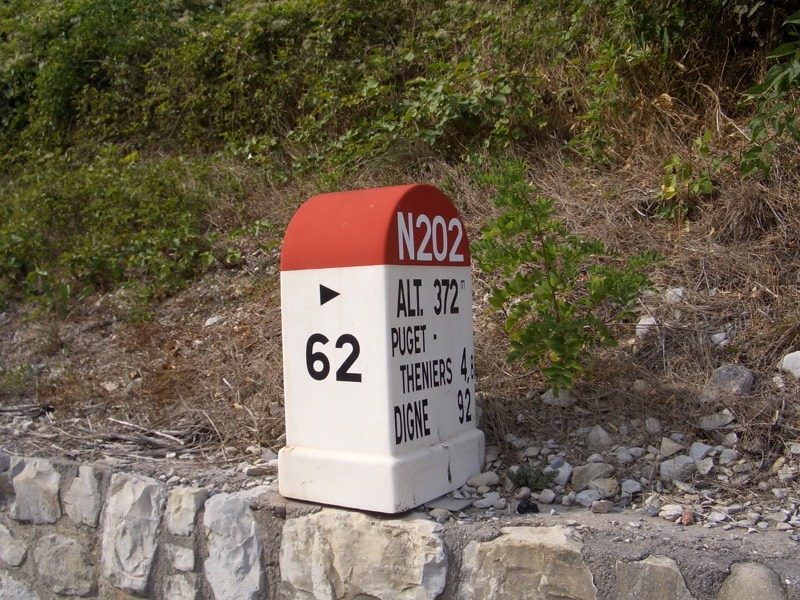
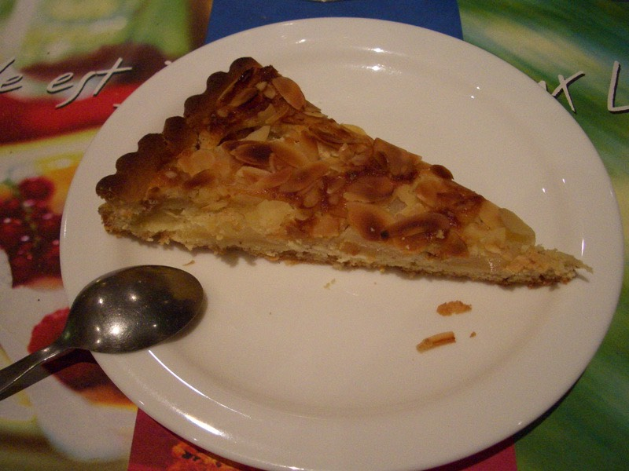

從到法國的第一天開始，每天睡前都會吃一顆綜合維他命，結果還是照樣感冒。
已經吃了2/3瓶了，雖然沒什麼用，就當吃心安的也沒差，丟掉也是浪費。
睡前希望這一覺能把感冒給睡好，今天沒有賴床，因為一醒來發現情況不太對。
感冒的狀況是恢復的差不多了，只是為什麼睡醒就已經十點半多了呢......天呀，會不會睡得太過頭了一點？
離開旅館已經十一點半，確實已經是中午了，豔陽天晒的柏油路都發出熱氣。
今天有個很重要的工作要在尼斯完成才出發，兌換旅行支票。
原定計畫是多跑幾家不收手續費的地方把1500元都換掉（不同地方有限制，有的只能換300歐元）
先跑了郵局，不給換，再跑銀行，還是不給換。多跑幾家，都是一樣的情況。
為什麼呢？寫著『Change』卻不給換，THOMAS COOK旅行支票會不會太難用了一點？
繞著尼斯跑來跑去，除了晒太陽什麼事情也沒辦成，生氣。
中午十二點半，看到觀光客都在吃美味的午餐，我雖然窮但是我可以刷卡。
菜單看不懂，就跟隔壁吃一樣的好了，反正看起來很好吃的樣子 :P
用手指頭偷偷地比著隔壁說『我也要吃這個』，感覺還蠻不好意思的 = ="
吃飯的時候，一直覺得其實自己不算胖呀，不曉得怎麼會突然有這樣的念頭。
這是今日特餐，生菜沙拉
蔥燒豬肉，真的好好吃唷∼想不到法國人也可以把豬肉煮的這麼樣入味。
吃完之後，心情好很多，不瞎晃了，去旅遊諮詢中心問該怎麼處理旅支的問題。
小姐在地圖上畫了幾個可以換旅支的地方，跑去問了一下，都是私人營業的店舖，要收手續費。
只猶豫了2秒鐘，就決定把全部的旅支都換成現金。要賺就讓你們賺吧，真的受夠了旅支的氣了。
1500的旅支，要收3%手續費，實拿現金1455歐元，微微的心痛，錢就這麼消失了。
雖然虧本了45歐元，但往後幾天的生活費總算有了著落，旅支再見，這輩子大概不會再用到你了。
換到了錢，小心藏好，準備離開尼斯，再去海邊溫習最後的沙灘和泳裝美女。
等等就要入山區了，接下來將近20天都不可能看得到海了。
離開尼斯，看到往迪紐（DIGNE）的路標，皺了一下眉頭。
有145公里要騎，現在已經下午兩點超過了，而且等一下要騎的是山路，不可能再用時速30飆車。
只怕騎到那邊已經是晚上十點、十一點了，真是糟糕，今天睡得太晚了，又在尼斯亂晃，
晚起的鳥兒要趕路，騎多少算多少吧。

沿著N202騎，等到了今天今天的目的地時，拿出地圖來看，才發現原來我騎錯路了 /_\
真是奇蹟呀∼！騎了一整天，才發現騎錯路，這....我能說什麼呢？
雖然路標指著是迪紐沒錯，但騎N202是比較遠，山勢也比較高的路線。
可以有更好的選擇從尼斯走直線到迪紐，走N85的話，一定會輕鬆很多吧∼現在說也來不及了。
準備入山前的景色，高山就在眼前，不曉得會爬多高？
中午吃的蠻高級的，所以今天體力很充沛，爬山也是小意思。
山裡面的景色相當漂亮，地層形狀很明顯

真是壯觀的叫人讚嘆大自然的偉大。
山裡面也有一條鐵路，不曉得還有沒有在使用呢？
幾乎是岩石地層，在夾縫當中騎車，感覺自己有夠渺小的。
下午四點，在廢棄的工寮發現可以用的水龍頭，真是幸運。
打開水龍頭先讓它流個三分鐘再裝水喝，順便把頭給洗了洗。
騎了一個多月的車，因為包頭巾、帶手套，所以有些地方晒的很黑，有些則越來越白。
看起來很奇怪，利用剩下的20天，就放給它晒，看能不能晒的均勻一點。
不用說，這麼偏僻的地方，當然沒什麼城鎮，連加油站、商店都很罕見。
修車廠出現了一間，附設小商店，結果都賣些汽車用品。
唯一一台冰箱，只有寥寥可數的幾瓶飲料，沒賣吃的東西。
順手拿一瓶水果茶，結帳時看到櫃台旁放著像是裝飾用的大冰淇淋。
『這個是可以吃的東西嗎？』
『是呀，棉花糖唷。』
就這樣買了1.5歐元的水果茶外加2.5歐元的棉花糖。
甜甜的棉花糖吃起來QQ的，卻沒有吃飽的感覺，但吃的好開心∼ *^^*
快五點了，還有92公里呀∼我的老天爺

好恐怖的稻草人喔 /_\ 別說鳥會怕了，連我看了都怕。
山裡面偶爾就會有這樣的建築物，以前應該是拿來當作引水道，現在不知還有沒有用途。
一整路上都是小心落石的警告標語，這可不是掛好看的，真是掉了滿地的落石。
路走著走著就變成沿著陡峭岩壁騎了，自己又是靠外側，不專心發呆做個白日夢的話，就掉下去了。
等會要過這座單線通行的橋樑，蓋在兩座山之間險惡的峭壁，好厲害的小工程。
一直都是上坡，到底要爬多高才會開始出現下坡呢？
爬到晚上七點還在爬，就有一點小悶，還有五十幾公里才會到迪紐，真的太拼命了。
山中的小房子，住在這裡真是厲害，像是與世隔絕的隱居生活。
硬是挖出個山洞出來，但就技術來講，應該比挖隧道簡單太多。
上次爬庇里牛斯山，從海拔800開始騎，最高峰是2115，也就是爬了約1300公尺。
今天從海邊的海拔零公尺開始往上爬，結結實實的爬了一百公里的上坡路段，最高峰雖然才1124公尺。
但就體力的消耗來講，並不會輕鬆多少，正確的來說，兩腳的膝蓋痛的要命 >"<
過了最高峰，總算出現下坡了，騎車的時候膝蓋不會痛，下坡沒踩踏板，反而開始刺痛了起來。
雲層有點厚，老天保佑別在這個時候下雨。
結果爬了一百公里的上坡，只滑了十五公里的下坡，通過隧道時，在眼前展開的巨大的山中湖。
真的好美呀∼湖水藍的不可思議，比蔚藍海岸還要藍，不知道深度有多少。
這邊是天然的呢？還是人工圍堵起來的水庫，不得而知
這麼大的湖，一直綿延到今晚過夜的城鎮都還有。
在這邊釣魚是很漂亮沒有錯，但真的很擔心你掉下去的話該怎麼辦才好。

七點五十分，到一個叫聖安德魯的小城，若能找到旅館，房價又OK的話就住下吧。
找到旅館+餐廳+酒吧的理想組合，一進門就是一隻跟人一樣大的伯恩山趴在酒吧前。好可愛唷∼！握手∼！
旅館蓋在湖的旁邊，景色宜人，房價是35歐元，算還好啦，現在身上又有充足的資金可以花用了。
晚餐吃今日特餐15歐元，只要菜單有看到這一項選擇，那就是吃這個了。
依舊相當綠的綠沙拉。

主菜是豐盛的一大盤，裡頭有：
燉青菜（紅蘿蔔、菜頭、馬鈴薯、四季豆、花生、青椒、番茄跟不明物。）
滷雞腿+滷豬肉
一小根烤過的香腸
跟很像米，但其實不是米的東西，也不知道是什麼，該不會這麼閒把米切的碎碎的吧？
甜點，梨子派。這樣也算吃到梨子，稍解想念。

香濃的拿鐵咖啡仍是不可少的。
房間裡頭有三張床，兩張併起來的單人床，外加一個上鋪，那麼...今晚爬上去睡好了 :X
雖然說了連我自己都不相信，但是明天我要早起。七點起床，八點出發。不然我就是豬。